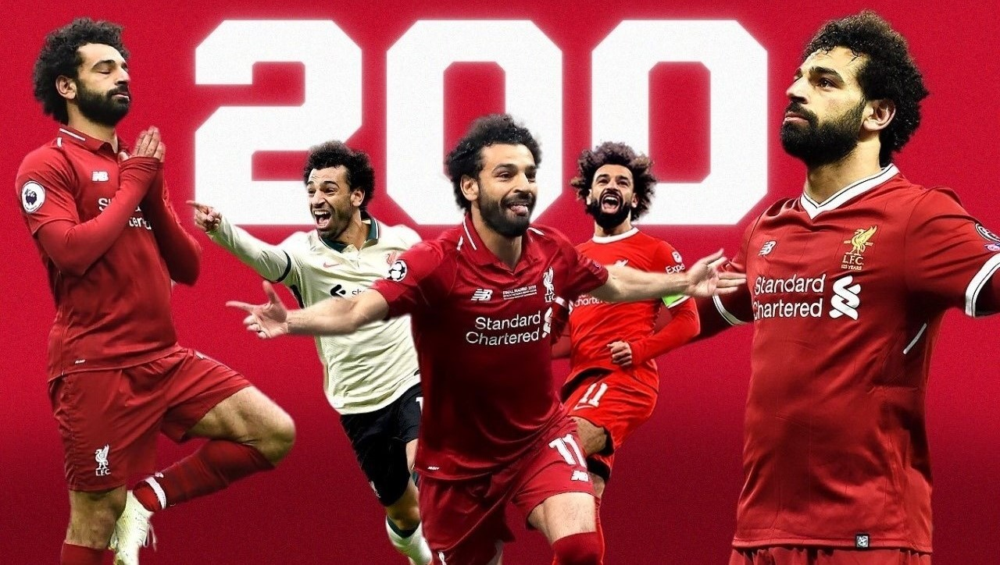

- Omar Ayman Gaber
- Fayez Mohamed Meabed
- Mahmoud Mustafa Ahmed
- Eslam Gamal Ali
- Mohamed Ashri Mustafa
- El-Adham Nagy Khazim
MOHAMED SALAH NETS 200TH LIVERPOOL GOAL TO REACH DOUBLE MILESTONE WITH
150TH PREMIER LEAGUE STRIKE



The Numbers Behind Mohamed Salah’s 200 Liverpool Goals
After becoming the fifth player in Liverpool’s history to reach 200 goals in all competitions, we look at the numbers behind Mohamed Salah’s fruitful Anfield career.
Speaking to the media after Liverpool had missed out on signing Basel winger Mohamed Salah in January 2014, Brendan Rodgers was disappointed.
He had wanted to boost his attacking options with the young, exciting and rapid Salah, but rivals Chelsea denied him with a bigger bid for the Egyptian.
The club did everything they felt they possibly could to get a deal, but it wasn’t to be,” Rodgers said.
In a further bitter twist, Salah played against Rodgers’ side at Anfield a few months later in a win for José Mourinho’s men that ultimately cost Liverpool the 2013-14 Premier League title.
That is down to his sheer talent but also a change in approach once Klopp got hold of him. While he had been a fairly direct winger at Roma, he hadn’t been taking as many shots, recording just 2.3 attempts at goal per 90 minutes in 2015-16 and 3.0 the following season. That rose to 4.3 in his first season at Liverpool and has never been lower than 3.3 per 90 in a campaign since.
Salah returned to England with a bang, determined to show his time at Chelsea was not indicative of his quality. He scored 44 goals in his first season with Liverpool, an all-time record for the club in a debut campaign, while it also made him one of only three players to net 40+ goals in a season for them, along with Ian Rush (twice) and Roger Hunt
And while he hasn’t quite reached those exceedingly high levels again, he has remained more than potent in front of goal. Since Salah signed for Liverpool in 2017, only Robert Lewandowski (275), Kylian Mbappé (230) and Harry Kane (203) have scored more goals than him of players to feature in Europe’s top five leagues.
He already has 14 this season, and with his goal against Crystal Palace, he became just the fifth player to score 200 for Liverpool after Rush (346), Hunt (285), Gordon Hodgson (240) and Billy Liddell (228). He’s likely another season away from catching Liddell, while threatening Rush’s overall record seems fanciful at best.